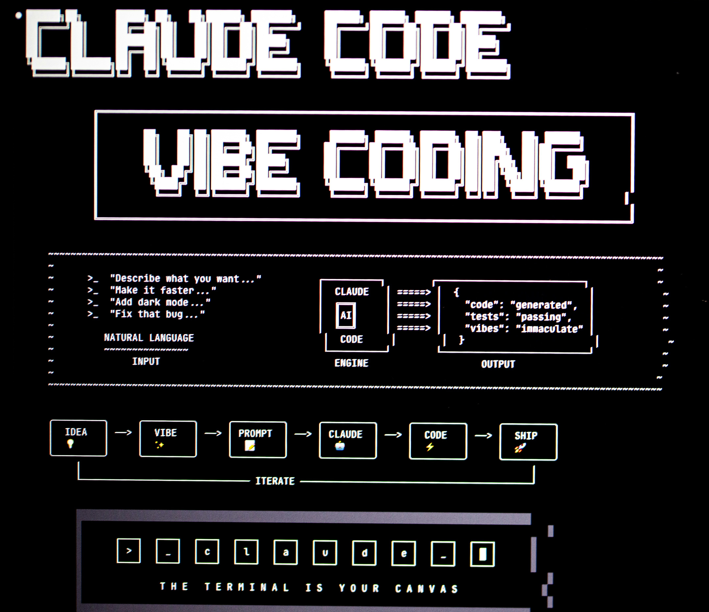
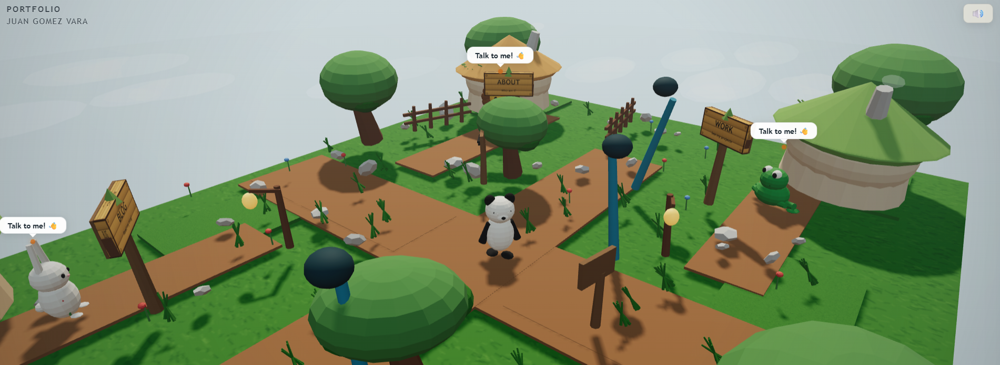
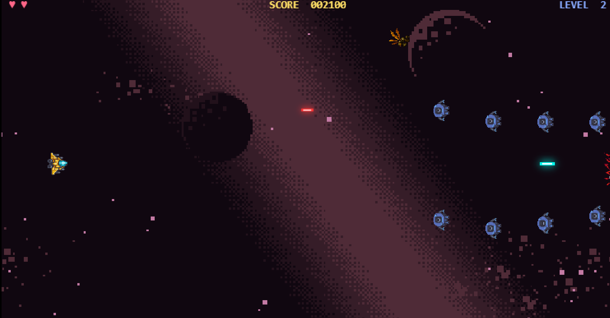
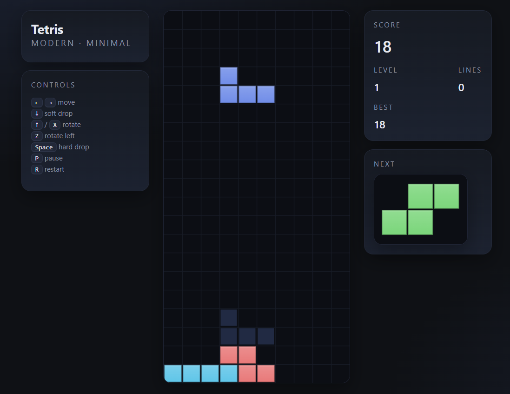
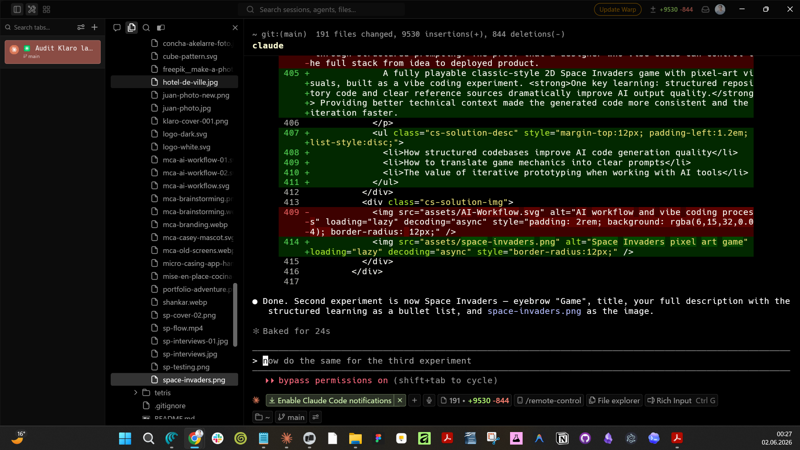

Building to learn.
Shipping to understand.
Most designers learn AI by reading about it. I learn by building with it. The AI Playground is the lab where theory becomes practice. Every experiment answers a question I couldn't answer by watching a tutorial.
The rule is simple: if I'm curious, I build it. If it works, I ship it. If it breaks, I learn from it. Nothing here is meant to be polished or complete — it's meant to be honest about the process of becoming better.

Three types of
experiments
Every experiment in the playground falls into one of three categories. Each one builds a different muscle.
How vibe coding
actually works
Vibe coding is not random. It requires the same design thinking skills applied to a different medium — and a stronger planning discipline than most people expect.
Select
experiments
A sample of things built in the playground. Each one started with a question. Each one left me knowing something I didn't know before.
What if a portfolio felt like a game? Inspired by interactive adventures and creative portfolio experiences, I transformed my portfolio into an explorable world where visitors discover my work through play. Built using open-source references and AI-assisted development, the project explores how storytelling and interaction can make a portfolio more memorable.
Visit here →
A fully playable classic-style 2D Space Invaders game with pixel-art visuals, built as a vibe coding experiment. One key learning: structured repository code and clear reference sources dramatically improve AI output quality. Providing better technical context made the generated code more consistent and the iteration faster.
- How structured codebases improve AI code generation quality
- How to translate game mechanics into clear prompts
- The value of iterative prototyping when working with AI tools

My first attempt at generating a game from a single prompt. The AI produced an impressive result on the first try — but the output was an interpretation of classic Tetris mechanics, not a faithful 1:1 recreation. That gap between expectation and output turned into the most valuable lesson of the experiment.
- AI can rapidly generate functional prototypes from minimal input
- Ambiguity in prompts leads to creative interpretation, not precision
- Clear constraints are essential when aiming for faithful recreations
- Imperfect output can still lead to useful learning outcomes

What the playground
actually teaches

What 200% growth
looks like in practice
Growth in vibe coding is not measured in lines of code. It's measured in the quality of decisions made before, during, and after a build.